Pourquoi ce sujet ?
Nous avons été frappés lors des révoltes en Nouvelle-Calédonie par l’interdiction de Tik Tok décidée, avec l’état d’urgence, le 15 mai 2024. Cette décision avait été prise car le gouvernement avait jugé que ce réseau social était utilisé par les groupes contestataires pour communiquer et s’organiser. Alors que nous pensions que seuls les pays autoritaires, dépourvus d'État de droit, comme la Chine par exemple, pouvaient à ce point contrevenir à la liberté d’expression, cet épisode inédit a mis en lumière qu’un pays comme la France, considéré comme démocratique, en était tout à fait capable. Etonnant donc pour un pays qui a inscrit dès 1789 la liberté d’expression dans la déclaration des droits de l’Homme et du citoyen, faisant alors d’elle l’un des principes les plus fondamentaux de notre République.
Pourtant, ce n’était pas la première fois que cette liberté d’expression était remise en cause depuis l’arrivée des réseaux sociaux dans nos vies. En effet, l’accroissement de leur utilisation a inévitablement mené à un besoin de régulation de ces outils afin d’éviter leurs dérives que l’on ne connaît que trop bien aujourd’hui (discours de haine, harcèlement, désinformation, etc.). Ainsi, nous assistons tous les jours à des censures de contenus à tel point qu’elle nous apparaît maintenant comme une évidence. Cependant, des épisodes comme celui de la censure totale de Tik tok dans un but d’éviter les révoltes nous font nous questionner sur les limites de cette censure et jusqu’où nous pouvons l’accepter. Alors nous nous sommes interrogés sur les modalités de cette censure en régime démocratique, sur sa légitimité ainsi que ses acteurs.
Nous avons émis l’hypothèse que peut être cet épisode n’était pas si étonnant si nous prenions en compte la diversité des censures auxquelles nous faisons face chaque jour en France, que nous considérons comme justifiée lorsqu’elle nous protège de discours illicites et haineux, mais qui peut souvent s’intégrer de manière insidieuse dans nos quotidiens, outrepassant parfois la seule censure de contenu illicite. Ainsi, nous avons décidé d’enquêter en cherchant à répondre aux questions suivantes :
- Quels sont les acteurs de la censure dans les régimes démocratiques ?
- Dans quelle mesure est-elle visible ?
- Que vise-t-elle ?
- Finalement, comment s’exerce la censure en régime démocratique ?
Nos hypothèses et la méthode pour y répondre
GAFAM et Etat une censure main dans la main
Nous avions à ce stade quelques hypothèses qu’il nous fallait étudier. Tout d’abord, nous avions remarqué grâce à notre utilisation fréquente des réseaux sociaux que la censure sur les plateformes numériques était décidée par ces dernières. En effet, il nous apparaissait que les décisions de retrait de contenu provenaient souvent d’elles, souvent en expliquant que celui-ci contrevient à leurs “standards de communauté”. Nous avons alors essayé de déterminer dans quelle mesure cette censure était vraiment de leur fait et quelle implication avaient les gouvernements dans celle-ci. Nous sommes partis de l’hypothèse que les gouvernements devaient sans doute pouvoir agir directement sur certains contenus, en demandant aux plateformes directement de retirer du contenu, mais que les GAFAM (Google, Amazon, Facebook, Apple et Microsoft, les géants du numérique) possédaient également une marge de manœuvre importante, nous poussant alors à parler de délégation de la censure.
Pour étudier cette hypothèse, nous nous sommes intéressés à des contenus censurés en essayant d’identifier les raisons de leurs censure (qui ne sont parfois pas explicites du tout, comme nous avons pu le découvrir avec le cas du shadowbanning). Par ailleurs, nous avons également utilisé les “Transparency report” des plateformes numériques qui fournissent de nombreuses données sur les censures qu’elles effectuent, particulièrement sur le nombre de censures demandées par les gouvernements. En outre, nous nous sommes intéressés à la réglementation existante en France et au niveau de l’Union Européenne concernant la régulation des contenus publiés sur les plateformes numériques. Nous avons donc étudié le règlement antiterroriste européen de 2019, la loi Avia adoptée par le parlement français en 2020 ou encore la DSA afin de comprendre quel rôle ces règlements, induisant une pression réglementaire sur les GAFAM, jouaient dans la censure effectuée par ces dernières. C’est ainsi que nous avons établi notre première partie, cherchant à expliquer les formes de censure, explicites ou non, existant sur les plateformes numériques en régimes démocratiques, passant par la délégation de cette censure aux GAFAM.
Les milliardaires, des censeurs en puissance
Par ailleurs, nous savions qu’en France, 80% des médias sont possédés par seulement 9 milliardaires. Nous avons alors émis l’hypothèse que, tout en gardant une couverture de liberté de la presse en autorisant la prolifération d’un nombre important de journaux, cette concentration des médias pouvait mener à une forme de censure plus insidieuse, leurs propriétaires choisissant quels sujets devaient être traités, ou non. En effet, la liberté d’expression ne peut s’influencer dans les médias seulement si la presse est libre, détachée de toute influence. Or, étant concentrés entre les mains de quelques milliardaires, proches du gouvernement ou de mouvances d’extrême droite, les conditions de cette liberté ne nous semblaient pas réunies. D’autant que le gouvernement semble utiliser cette machine médiatique bien huilée en occupant l’espace intentionnellement avec événements futiles, loin des préoccupations majeures des citoyens, détournant l’attention publique et forgeant le consentement. Nous avons alors décidé d’étudier dans quelle mesure le contrôle des médias français présentait également une forme de censure à laquelle nous sommes confrontés au quotidien, alors même que nous vivons supposément dans un régime démocratique.
Pour étudier et développer cette hypothèse, nous avons tout d’abord utilisé nos propres expériences en étudiant les sujets traités dans différents médias que nous connaissions, notamment en fonction de leur propriétaire. En outre, nous nous sommes également intéressés à des rapports d’associations ayant étudié ces phénomènes, ou de médias indépendants comme Mediapart, afin d’observer quelles formes de censures étaient exercées dans ce cas là, mais également étudier à quelles fréquences sont évoqués certains sujets dans les médias, et dans quelle mesure d’autres sont tus,grâce à des statistiques, ce qui pouvait nous éclairer sur l’existence d’une censure dans les médias ou non. ce qui pouvait nous éclairer sur l’existence d’une censure dans les médias ou non. Nous avons également utilisé les apports de Noam Chomsky et Edward Herman (La fabrication du consentement) et testé ses leurs thèses sur des cas concrets, observables en France . aAinsi que les méthodes d’Edward Bernays regroupées dans son livre Propaganda, comment manipuler l’opinion en démocratie, également utilisées aujourd’hui en France. Nous avons ainsi pu confronter ces théories à la pratique pour aller plus loin et voir quel type de manipulation de l’opinion publique était à l'œuvre, tout à fait à l’encontre de la liberté d’expression et donc d’opinion, participant à une forme de censure de contenus par invisibilisation.
Une censure de plus en plus débridée à l'avenir ?
Enfin, après avoir émis ces différentes hypothèses, nous sommes arrivés à notre hypothèse finale : nous sommes confrontés au quotidien à une censure, plus ou moins visible et pour des motifs divers, même en régime démocratique, et celle-ci peut mener à une censure plus débridée en temps de crise. Censure au départ utlisé uniquement dans des moments d'exception mais qui à terme rique de devenir la norme.C’est alors là que nous nous sommes à nouveau intéressés au cas de la Kanaky et la censure de tik tok, à l’origine de notre travail d’enquête, qui illustre parfaitement que même un régime démocratique peut censurer en période de crise une application, ce qui semble pourtant contrevenir à la liberté d’expression. Cette hypothèse n’est cependant pas tout à fait étonnante si nous considérions nos hypothèses précédentes, démontrant que la censure était très présente dans notre pays.
Pour étudier cette hypothèse finale, nous avons utilisé des textes de loi sur le numérique (la loi SREN notamment) ou des décisions de justices comme celle du Conseil d’Etat concernant l’interdiction de tiktok, ou encore du Conseil Constitutionnel pour des restrictions sur des lois antérieures. Nous nous sommes également appuyés sur des articles de presse ou d’associations telles que la Quadrature du net, qui ont joué un rôle important dans la dénonciation des risques pour les libertés qu'engendraient diverses décisions du gouvernement et des parlementaires, (le blocage de Tik Tok, le passage de la loi SREN ou encore, au niveau européen, le projet de loi “Chat Control”). La confrontation des sources médiatiques et juridiques a ainsi mis en valeur le débat existant et vivace sur la limite entre sécurité numérique et censure. Elle nous a également permis entre autres de mesurer l’écart entre le contenu des textes de lois et leur application par le gouvernement français. Dévoilant alors que celui-ci possédait en réalité une certaine liberté concernant la censure, ce qui a pu mener sans trop de difficultés à l’interdiction totale d’un réseau social sur un territoire français. Par ailleurs, nous avions également émis l’hypothèse que le gouvernement français, après cet épisode, pourrait éventuellement durcir la réglementation autour des outils numériques afin de justifier ce type de censure qui pourrait devenir plus fréquent dans le futur.
Notre travail d’enquête s’est donc reposé majoritairement sur des textes de loi autour de la réglementation d’outils numériques, sur des rapports d’association ou de plateformes numériques nous indiquant la fréquence de la censure mais également les types de censure existant en régime démocratique, en se concentrant sur la France, ou encore en étudiant des contenus censurés que nous avons pu trouver sur les réseaux sociaux afin de découvrir les justifications de la censure.
Conclusion
Cette enquête nous a donc permis de répondre à nos questions de recherches concernant les modes de censure et les acteurs de celle-ci dans les régimes démocratiques, avec le cas appliqué de la France. En effet, nous avons pu révéler, par l’étude des règlements, textes de loi, rapports des plateformes numériques ou encore enquêtes journalistiques, que les acteurs de la censure dans les régimes démocratiques, et plus précisément en France, sont principalement concentrés sur trois cercles : le pouvoir politique, les GAFAM, et les propriétaires des grands médias. L'action de ces trois types de protagonistes confirme bien notre hypothèse initiale, selon laquelle la censure prend une diversité de formes, plus ou moins explicites. Nos recherches ont ainsi pu en préciser ces modalités.
En premier lieu, la censure peut être déléguée aux GAFAM par le gouvernement, qui leur donne ainsi la responsabilité de supprimer certains contenus. Cette responsabilité peut être utilisée abusivement, que ce soit par crainte de sanction, poussant ainsi à une surcensure, ou bien par intérêt et idéologie des propriétaires des plateformes ou du lieu où elles sont implantées, comme ce fut le cas avec le compte de Mondoweiss évoqué précédemment. La censure des GAFAM peut également être implicite et s’effectuer via la pratique du shadowbanning, ce qui interroge sur les possibles atteintes à la démocratie qui pourraient avoir lieu ou ont déjà eu lieu. Un autre type de censure implicite est utilisé dans l’ensemble des médias, à travers le choix des sujets traités ou de la manière de les aborder, imposant souvent une vision stéréotypée des informations. Cette vision est véhiculée à la fois par les acteurs politiques et gouvernementaux et les propriétaires des médias. L’étude de rapports d’enquêtes de médias indépendants a ainsi montré que, lorsque 10 sociétés contrôlent 90% de la presse écrite, 55% des parts d’audience de la télévision et 40% des parts d’audience de la radio, certains thèmes et certains points de vue sont privilégiées, et le pluralisme est alors largement menacé, Des chaînes comme CNews ont d’ailleurs déjà été sanctionné pour cela. Enfin, la censure peut prendre une forme bien plus radicale et explicite dans le cas de crises, comme cela est arrivé en Kanaky en 2024, alors même que les fondements juridiques de cette décision de bloquer entièrement l’accès à Tik Tok, comme nous l’avons explicité, étaient discutables. Nous avons ainsi enfin pu nous interroger sur les possibles formes futures que prendrait la censure, ou du moins les justifications légales qu’elle emploierait, à travers l’étude de diverses lois ou projets de règlements européens. Cela nous a fait réaliser que les potentiels de restriction de nos libertés se trouvaient parfois dans des textes sans qu’on s’en aperçoive, d’où notre recours à des articles de presse ayant enquêté sur la question.
Ainsi, même si le plus souvent le but affiché de la censure est la protection des populations (lutte contre les messages haineux, contre la pédocriminalité ou encore contre la propagation de la violence), les diverses formes qu’elle peut prendre et que nous avons mises au jour révèlent un potentiel nuisible à la liberté d’expression. En effet, certains cas que nous avons évoqué montrent bien qu’il y a au moins des doutes sur l’utilisation politique de la censure, allant à l’encontre des principes de pluralisme et de liberté d’opinion prônés par les régimes démocratiques. Notre hypothèse de départ, selon laquelle la censure pouvait prendre des formes insidieuses dans notre quotidien, est par ailleurs confirmée, ce qui s'illustre notamment par l’euphémisation des pratiques de censure, qui ne sont jamais qualifiées comme telles.
En somme, il apparaît que l'idéal démocratique de liberté d'expression n'est jamais entièrement respecté, et ce, plus alertant encore, sans même que nous nous en rendions compte. Cette enquête invite ainsi à ne pas prendre pour acquis les garanties de liberté d'expression théoriquement incluses dans le modèle démocratique français, et à se questionner sur le contrôle du monde numérique, ses acteurs et ses formes. Le monde numérique et les réseaux sociaux évoluent vite, ce qui justifie selon certains acteurs que les règlementations évoluent de même. Il faudra prêter attention à ce que ces changements rapides n'affectent pas des droits et libertés normalement acquis, en accordant au pouvoir en place ou aux plateformes plus de possibilités de restriction.
Bibliographie
- Ouvrages académiques
- Chomsky, Noam, and Edward S. Herman. Manufacturing Consent. London, England: Vintage, 1995.
- Colon, David. « Edward Bernays et la fabrique du consentement. » Cahiers de psychologie politique, 2021, 38.
- Fistikci, Aysegul. « Entre manipulation de la vérité et manipulation des opinions, quelle régulation des réseaux sociaux en démocratie ? » Civitas Europa n° 54, no 1 (2025): 301-317. https://doi.org/10.3917/civit.054.0301.
- Martin, Laurent. « Censure et liberté d’expression en France depuis 1945 », in Histoire de la censure en France. Presses Universitaires de France, 2022, p. 99-120.
- Martin, Laurent. « Censure répressive et censure structurale : comment penser la censure dans le processus de communication ? » Questions de communication, 15 | 2009, mis en ligne le 1 août 2011.
- Meserve, Stephen A., et Daniel Pemstein. « Google Politics: The Political Determinants of Internet Censorship in Democracies ». Political Science Research and Methods, vol. 6, no 2, avril 2018, p. 245-263. Cambridge University Press. https://doi.org/10.1017/psrm.2017.1.
- Mucchielli, Laurent. « La doxa du Covid : Réflexions sur le contrôle de l’information relative à la crise sanitaire. » Les Cahiers du CEDIMES, 2021, 16 (Hors-Série), pp.138-146.
- Rigouste, Mathieu. La Domination Policière. 2012. https://doi.org/10.3917/lafab.rigou.2012.01.
- Articles de loi et jurisprudence
- Loi Avia : lutte contre les contenus haineux sur Internet. Consulté le 31 octobre 2025.
- DSA : le règlement sur les services numériques (Digital Services Act). Consulté le 31 octobre 2025.
- Question orale n° 792. Consulté le 31 octobre 2025.
- Décret n° 2024-436 du 15 mai 2024 portant application de la loi n° 55-385 du 3 avril 1955.
- L. n°2024-449, 21 mai 2024, visant à sécuriser et à réguler l’espace numérique, NOR : ECOI2309270L : https://www.legifrance.gouv.fr/jorf/id/JORFTEXT000049563368/. Consulté le 29 octobre 2023.
- CE n° 494320/2024.
- CE n° 494320/2025.
- DC n°801/2020 : https://www.conseil-constitutionnel.fr/decision/2020/2020801DC.htm.
- Pacte international relatif aux droits civils et politiques.
- Blocage de TikTok en Kanaky (Nouvelle-Calédonie) : décision du Conseil d'État.
- Articles de presse
- Hérard, Pascal. « Règlement antiterroriste européen : la censure d'Internet automatisée par les GAFA ? ». TV5 Monde Info, 1 mars 2019.
- Saviana, Alexandra. « Accusé de censurer les groupes des gilets jaunes, Facebook plaide une simple mise à jour ». Marianne, 18 janvier 2019.
- Delacroix, Géraldine. « Facebook anéantit l’audience d’une partie de la gauche radicale ». Mediapart, 29 août 2019. https://www.mediapart.fr/journal/france/290819/facebook-aneantit-l-audience-d-une-partie-de-la-gauche-radicale.
- Baromètre La Croix – Verian – La Poste sur la confiance des Français dans les médias, 38e édition, janvier 2025.
- Franceinfo. « Où en est le Conseil national de la refondation, un an après sa création par Emmanuel Macron ? » Lien. Consulté le 1 novembre 2025.
- Janin, M. « L’influence démesurée des grandes fortunes sur les médias ». Basta! (consulté le 28 octobre 2025). https://basta.media/L-influence-demesuree-des-grandes-fortunes-sur-les-medias.
- Chat Control : règlement européen et atteinte à la confidentialité des communications.
- Couper l’accès aux réseaux sociaux pour couper court aux émeutes ?.
- Podcast Franceinfo : WhatsApp, Messenger et la Cour européenne des droits de l’homme.
- Article Ouest-France : Couper les réseaux sociaux en cas d’émeutes.
- La Première. « Interdiction de TikTok en Kanaky : une mesure basée sur un fondement juridique flou selon des experts. »
- La Première. « Aussitôt décrétée par l’État, l’interdiction de TikTok contournée en Kanaky. »
- Cnet. « Blocage de TikTok en Kanaky : l’usage des VPN explose pour contourner l’interdiction. »
- Le Figaro. « Le journaliste Thomas Legrand suspendu par France Inter après des propos litigieux sur Rachida Dati » [Vidéo]. YouTube. Consulté le 1 novembre 2025.
- Rapports d’ONG
- Rapport : « Comment la TV Bolloré sabote le pluralisme ». Acrimed. Consulté le 28/10/2025. https://www.acrimed.org/Comment-la-TV-Bollore-sabote-le-pluralisme.
- Rapport : « Le système Bolloré : de la prédation financière à la croisade politique ». Attac et ODM. Consulté le 25/10/2025. https://france.attac.org/nos-publications/notes-et-rapports/article/rapport-le-systeme-bollore.
- La Quadrature du Net : Chat Control, on fait le point.
- Campagne Stop Scanning Me.
- Référé liberté déposé par la Quadrature du Net le 17/05/2024.
- La Quadrature du Net attaque en justice le blocage de TikTok en Kanaky.
- Référé liberté (Blocage TikTok en Kanaky).
- Projet de loi SREN : analyse critique par La Quadrature du Net.
- Autres ressources
- Rapport de transparence Meta (demandes gouvernementales de données).
- Sénat, Rapport d’information n° 521 (2023-2024), “Émeutes de juin 2023 : comprendre, évaluer, réagir”, déposé le 9 avril 2024. https://www.senat.fr/rap/r23-521/r23-5218.html.
- La Quadrature du Net – informations générales sur la liberté numérique.
- Al Jazeera English. « Noam Chomsky : The five filters of the mass media machine » [Vidéo]. YouTube. Consulté le 1 novembre 2025.
I — La délégation de la censure aux GAFAM par l'Etat
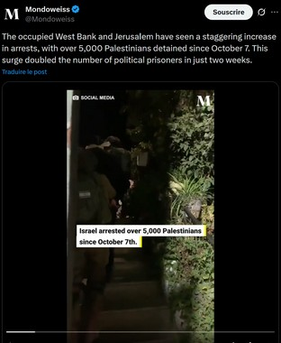
Introduction
Il apparaît que la réglementation française et européenne est assez favorable au GAFAM. Dans le droit français, les GAFAM sont des “hébergeurs” au sens de l'article 6-1-2 de la LCEN du 21 juin 2004. Or ce statut leur assure une moindre responsabilité civile et pénale concernant les contenus partagés sur la plateforme par leurs utilisateurs dès lors qu’ils s’engagent à assurer le retrait de contenus illicites signalés. Paradoxalement, les Etats européens et français semblent déléguer la modération de ces contenus à ces géants du Web, sous des formes qui laissent entrevoir des tentatives de censure et de surveillance de masse.
La réglementation européenne
La réglementation antiterroriste européenne : l’externalisation de la police et de la justice
Le règlement antiterroriste européen datant de 2019 est un exemple de censure d’internet déléguée par les Etats européens aux géants d'Internet. L’Union européenne adopte en avril 2021 une réglementation dont l'objectif est d’éradiquer la diffusion de contenus à caractère terroriste sur Internet. Selon Olivier Iteanu, avocat spécialiste du droit numérique, il s’agirait d’une déresponsabilisation de la puissance publique à travers une « délégation de la régulation, délégation de la puissance publique, délégation de police et même de justice ».[1] En effet, quand les « mesures proactives » prises par un réseau social comme Facebook n’auront pas suffi à bloquer les contenus visés, la police pourra prendre le relais, pouvant exiger des services défaillants la suppression d’un contenu dans un délai d’une heure. Tout cela sans l’autorisation préalable d’un juge. En cas de non conformité, les plateformes risquent de se voir infliger une amende représentant jusqu’à 4% de son chiffre d’affaires. D’un point de vue technique, économique et humain, seuls les géants du Web peuvent respecter des obligations aussi strictes.Les autres acteurs n’ont d’autre choix que de cesser leurs activités. Le texte a pour effet de renforcer la domination de GAFAM. C’est le but même de ce règlement qui a été proposé en septembre par la Commission européenne, avec l’objectif d’étendre à tous les outils de modération (filtrage automatique et listes de blocage) développés par Facebook et Google depuis 2015. De plus, dans le droit de l’UE, la notion de «terrorisme» reste assez large, laissant une marge d’interprétation aux acteurs privés pouvant mener à la censure des opposants politiques et de mouvements sociaux de manière arbitraire.
L’effort européen pour une transparence plus encadrée de la censure
Comme a pu le montrer les épisodes de shadowbanning que nous développons dans la section suivante, les GAFAM manquent souvent de transparence en ce qui concerne leurs pratiques de censure. Pour pallier ce problème, l’Union Européenne a adopté en février 2022 le Digital Services Act (DSA). Outre son objectif de renforcer la lutte contre le contenu illicite, celui-ci vise également à accroître la transparence en ligne des GAFAM. En effet, ces derniers doivent maintenant expliquer les fonctionnements des algorithmes ainsi que mettre à disposition un système interne de traitement des réclamations permettant aux utilisateurs qui ont vu leur compte être suspendu de contester la décision.[5] Si le DSA n’est pas respecté par une plateforme, elle risque d’être sanctionnée par une amende d’un montant maximum de 6% de son chiffre d’affaires mondial annuel. Cependant, plus d’un an après le début de sa mise en œuvre, aucune sanction n’a été prononcée sur le fondement de ce texte.
Une censure discrète : le Shadowban
Les soupçons de censure lors du mouvement des Gilets Jaunes :
Lors de des mouvements des Gilets Jaunes en 2019, des plateformes (Twitter Facebook, Youtube) ont été sollicitées pour modérer des contenus jugés incendiaires souvent en coordination avec les autorités européennes. Les groupes de travail entre le gouvernement français et les plateformes ont été mis en place pour accélérer la détection et la suppression de contenus violents ou de fausses informations. Cette collaboration est justifiée par la volonté d’assurer la sécurité publique. Le mouvement s’étant solidifié sur la plateforme Facebook, selon des utilisateurs, Facebook aurait diminué le nombre des membres de groupes de gilets jaunes, supprimé des messages ou des groupes. Eric Drouet, un chauffeur routier a affirmé avoir perdu 50.000 membres sur son groupe, "La France en colère !!!". Le compteur officiel des gilets jaunes serait quant à lui passé de 2,8 millions de personnes à 1.8 millions. Mais l’équipe Facebook nie toute accusation de censure et pointe du doigt une mise à jour, cherchant à modifier la manière de compter les membres des groupes, supprimant du décompte toutes les personnes ayant été conviées par des amis à le rejoindre mais n'ayant jamais accepté l'invitation. Un autre exemple : le bug du 20 novembre qui a paralysé la plateforme fut perçu comme une tentative de nuire à la communication d’informations sur l’organisation du mouvement. Encore une fois, Facebook explique ce bug par des «dégradations de performances du site». Si ces épisodes peuvent être réduits à des rumeurs de censure perçue mais non avérée , il reste que Twitter a également suspendu plusieurs comptes liés au mouvement dans le cadre de campagnes de nettoyage visant à éliminer les bots et les comptes diffusant de la désinformation. De même, YouTube a appliqué les règles communautaires pour retirer des vidéos promouvant la violence ou la haine, dans le cadre de la pression exercée par les autorités pour limiter l’incitation aux troubles à l’ordre public
La censure par l'invisibilité : le cas du G7 de 2019
Par ailleurs, lors de la séance de questions au gouvernement organisée à l’Assemblée nationale le 19 novembre 2019, le député de la France Insoumis François Ruffin interpella le gouvernement sur une curieuse baisse de visibilité de son profil sur facebook en août, coïncidant avec la tenue du G7 (réunissant les chefs d’Etats des 7 plus grandes puissantes en 1957). Mediapart a par la suite mis en lumière un même phénomène[2] ayant touché, au même moment, d’autres pages militantes comme Lille insurgée, Bretagne noire ou encore Cerveaux non disponibles, qui a vu son audience divisée par 1000. Ce phénomène, c’est celui du shadowbanning, c’est-à-dire le blocage partiel ou total d’un utilisateur et de son contenu, sans que celui-ci ne le sache forcément, passant par une réduction de la visibilité de son compte. Cette pratique, bien que niée par les plateformes, est souvent dénoncée par les créateurs en raison du manque de transparence autour des raisons de ce shadowbanning. En effet, alors que les comptes touchés en août 2019 ont cherché des explications auprès de Facebook, Cerveaux non disponibles par exemple a reçu comme seule réponse « Votre avis sera utilisé pour améliorer Facebook. Merci d’avoir pris le temps de nous envoyer votre signalement. ». Un message automatique qui ne les a pas beaucoup éclairés sur la véritable raison de cette forme de censure. Par ailleurs, Mediapart a également interrogé Facebook. La plateforme leur a alors indiqué que la visibilité de ces comptes avaient été réduites car ils auraient publié du contenu “contrevenant aux standards de la communauté”. Une réponse toujours imprécise car à aucun moment n’a été précisé à quels standards ces contenus contrevenaient. Cela illustre alors le pouvoir discrétionnaire des grandes plateformes de réseaux sociaux lorsqu’il s’agit de censurer des contenus en raison du peu de justification qu’ils doivent fournir, ainsi que de la diversité des formes de censures qui existent sur les réseaux.
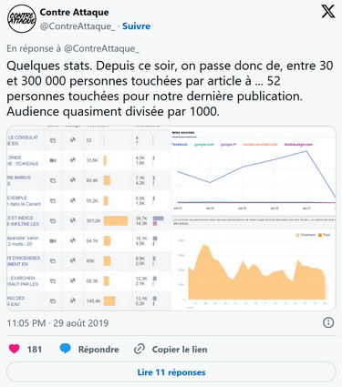
La censure préventive des GAFAM induite par la pression réglementaire
Par ailleurs, une autre facette importante de cette affaire concerne sa temporalité, cet épisode étant survenu, comme nous avons précisé précédemment, durant la réunion du G7. Or, ces groupes militants victimes de shadowbanning sont des groupes assumant leur opposition avec les politiques menées par Emmanuel Macron et les autres chefs d’Etat présents à cette réunion. Nous pouvions alors nous attendre à ce que les comptes censurés produisent du contenu contestataire à propos de cet évènement. L’étrange coïncidence entre cette vague de censure et cet événement a mené à l’interpellation par F. Ruffin [3] du gouvernement, visant à savoir si ce dernier a émis une quelconque demande de censure de ce contenu. A cela, le secrétaire d’Etat chargé du numérique a répondu que jamais le Gouvernement n’était entré en contact avec Facebook pour leur demander le retrait de pages de syndicats qui ne leur plaisaient pas, ce qui irait en effet à l’encontre de notre liberté d’expression. Ce point de la responsabilité du gouvernement dans cette censure, pourtant faite par Facebook, est central car il illustre la délégation de la censure au GAFAM, qui deviennent alors maîtres de la liberté d’expression et agissent alors de leur propre initiative. En effet, si le gouvernement n’est pas entré en contact avec Facebook pour demander la censure de ces contenus, cela ne signifie pas pour autant qu’il n’y est en rien impliqué. En effet, si les plateformes prennent l’initiative de la censure avant même que le gouvernement ne leur demande, c’est en partie en raison d’une pression réglementaire les incitant à une censure préventive. Ainsi, en France et au niveau européen, de nombreuses lois ont été adoptées pour encadrer l’usage du numérique, en particulier des réseaux sociaux, ayant mené à plusieurs reprises à une suppression de contenu. Nous pouvons par exemple évoquer la loi Avia[4], promulguée le 24 juin 2020, largement censurée par le Conseil Constitutionnel en raison de l’atteinte trop importante à la liberté d’expression qu’elle présentait. Cette loi, portée par la député Laëtitia Avia, vise à lutter contre les contenus haineux sur internet et responsabiliser les plateformes face à la haine en ligne. L’une des mesures phares de cette loi était l’instauration d’un délai extrêmement court concernant le retrait de contenu manifestement illicite. Ainsi, les grandes plateformes numériques disposaient de 24h pour retirer ce type de contenu à partir du moment où il leur était notifié, sous peine de recevoir une amende de 1,25 million d’euros. L’instauration d’un délai aussi court participait donc de manière évidente à une délégation de la censure aux GAFAM qui s’érigent alors en juges du contenu, devant déterminer sans intervention juridique extérieure ce qu’était un “contenu manifestement illicite”. Par ailleurs, cette loi prévoyait que les plateformes disposent d’une heure pour retirer un contenu signalé par la police comme relevant du “terrorisme”. Ici encore, la police devait alors décider seul, sans intervention d’un juge, de ce qu’était un contenu relevant du “terrorisme”. Ces dispositions furent évidemment contestées, considérées comme portant atteinte à la liberté d’expression.
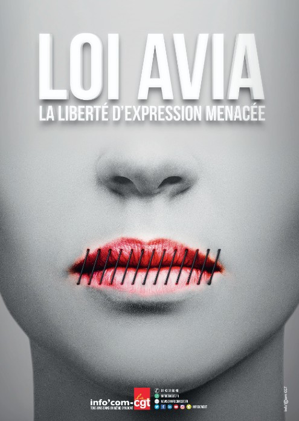
De plus, la peur de sanction économique a pu pousser les plateformes à une “sur censure” afin de ne pas risquer d’amende. Bien que ces dispositions aient été censurées, la loi Avia était discutée par les parlementaires au moment du G7, ce qui a pu pousser Facebook à anticiper son adoption et à montrer son exemplarité en censurant des contenus susceptibles de déplaire au gouvernement, par l’ajustement de leurs algorithmes afin de réduire la portée des contenus de protestation politique. Ainsi, les nombreuses lois qui existent concernant la régulation de contenus sur les plateformes numériques poussent aujourd’hui les GAFAM à censurer, parfois sous forme de shadowbanning, sans la nécessité d’une autorité juridique, le rôle de censeur leur étant alors délégué.
Les dérives de la délégation de la censure : l’exemple du discours pro-palestiniens
En outre, les plateformes utilisent des justifications pour retirer du contenu qui s’apparentent à des excuses pour censurer ce qui ne leur plaît pas, ou plutôt ce qui ne plaît pas aux gouvernements des Etats qui les hébergent. Nous pouvons ici prendre l’exemple des tentatives de répression des discours pro-palestiniens sur les réseaux sociaux. Ainsi, afin de répondre, en outre, aux exigences de l’Union Européenne concernant la lutte anti-terroriste ainsi que les lois encadrant les discours haineux en ligne, des groupes comme Meta (comprenant Facebook et instagram) ou encore Twitter n’ont pas hésité à retirer de nombreux contenus et compte dénonçant le génocide perpétué par Israël en Palestine sous prétexte que ceux-ci étaient “affiliés” au Hamas ou faisaient l’éloge de leurs actes, alors qu’il n’en était rien. C’est par exemple le cas d’une vidéo publiée le 28 octobre 2023 par Mondoweiss, une plateforme d’informations en ligne, dénonçant les emprisonnements arbitraires d’Israël qui s’est vue retirée d’instagram après que Meta ait jugé que la vidéo contenait des “éloges ou le soutien” à des “personnes et à des organisations que nous qualifions de dangereuses”.
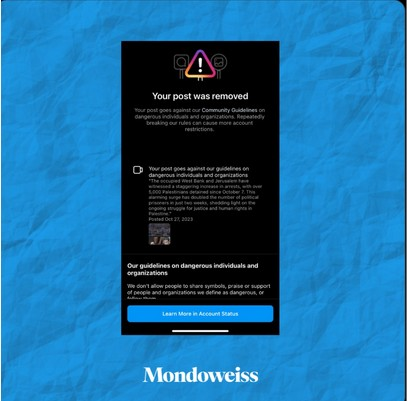
Ainsi, même dans les Etats démocratiques, de nombreuses formes de censure sont exercées sur les plateformes numériques. Ces censures peuvent venir directement des gouvernements qui effectuent des demandes de retrait de contenus auprès des plateformes.Aysegul Fitsikci parle de « démarche préventive » des Etats, évoquant la manière dont cette censure est souvent euphémisée dans les lois ou les réglementations car assimilée à une mesure de maintien de l’ordre public, pour être imposée d’une manière plus digestible.[7] Ces demandes sont visibles dans les “transparency reports” soumis par les plateformes numériques. Ainsi, pour la période allant de juillet à décembre 2024, la France aurait effectué 16 300 demandes de censure de contenu auprès de Méta, selon son rapport de transparence [6], ce qui place cet Etat haut dans la liste des demandeurs de retraits de contenu.
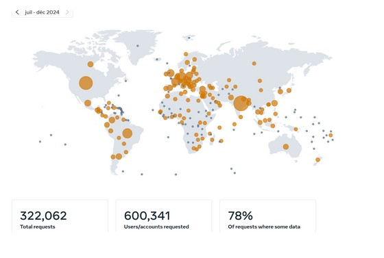
D’après une étude de deux chercheurs américains en science politique[7], Stephen A. Meserve et Daniel Pemstein, la fréquence de ces censures dans les régimes démocratiques dépendent principalement de trois facteurs :
- le nombre de brevets déposés (plus celui-ci est élevé, plus les Etats souhaitent protéger la propriété intellectuelle, ce qui les pousse à censurer notamment des contenus de plagiat),
- le système électoral et la taille des circonscriptions(plus la réputation d’un candidat compte, plus celui-ci va utiliser les accusations de diffamation pour faire retirer des contenus qui peuvent porter atteinte à sa réputation),
- la présence de dissidences internes au paysqui mène les gouvernements à censurer du contenu au nom de la protection nationale (cette thèse est appuyée par l’exemple de la censure de Tik Tok en Nouvelle-Calédonie, que nous développerons par la suite).
Outre ces demandes explicites des gouvernements auprès des plateformes numériques, une délégation de la censure aux GAFAM s’est produite dans les dernières années, notamment en France et au niveau de l’Union Européenne. Ainsi, ces géants du numérique anticipent bien souvent les demandes des gouvernements en censurant de manière explicite (par le retrait de contenu ou le bannissement de compte) ou plus insidieuse (par la pratique de shadowbanning par exemple). Ces pratiques sont justifiées par la lutte contre les contenus illicites sur internet ou pour la protection des enfants de la pornographie, mais participent à rendre banal la censure de contenu sur internet qui entre dans notre quotidien, même dans des régimes dits démocratiques, comme la France.
Notes de bas de page
[1] Règlement antiterroriste européen : la censure d'Internet automatisée par les GAFA ? | TV5MONDE - Informations ↑
[2] Delacroix, Géraldine. « Facebook anéantit l’audience d’une partie de la gauche radicale ». Mediapart, 29 août 2019, https://www.mediapart.fr/journal/france/290819/facebook-aneantit-l-audience-d-une-partie-de-la-gauche-radicale. ↑
[3] Question orale n° 792. https://www.assemblee-nationale.fr/dyn/15/questions/QANR5L15QOSD792. Consulté le 31 octobre 2025. ↑
[4] https://www.vie-publique.fr/loi/268070-loi-avia-lutte-contre-les-contenus-haineux-sur-internet. Consulté le 31 octobre 2025.↑
[5] https://www.vie-publique.fr/eclairage/285115-dsa-le-reglement-sur-les-services-numeriques-ou-digital-services-act. Consulté le 31 octobre 2025. ↑
[6] https://transparency.meta.com/reports/government-data-requests/country ↑
[7] Meserve, Stephen A., et Daniel Pemstein. « Google Politics: The Political Determinants of Internet Censorship in Democracies ». Political Science Research and Methods, vol. 6, no 2, avril 2018, p. 245‑63. Cambridge University Press, https://doi.org/10.1017/psrm.2017.1. ↑
II — Censure implicite dans les médias
« Ne réponds jamais, ne réponds à rien, embrouille-les ». C’est ainsi que Marlène Schiappa, ancienne ministre sous Emmanuel Macron, présente la stratégie de communication de son groupe alors qu’elle participe au jeu télévisé Les Traîtres. Loin d’être un cas isolé, cette déclaration reflète une nouvelle forme de censure qui prend place dans le jeu médiatique.
Une nouvelle définition de la censure
Dans nos sociétés libérales, on a coutume d’opposer la liberté d’expression et la censure. Pour autant, ce ne sont pas des phénomènes incompatibles et les médias de masse en France le reflètent bien. Selon Roland Barthes (Sade, Fourier, Loyola, 1971), « la vraie censure ne consiste pas à interdire (à couper, à retrancher) […] mais à étouffer, engluer dans les stéréotypes […] à ne donner pour toute nourriture que la parole consacrée des autres, la matière répétée de l’opinion courante ».
Il s’agit ici de redéfinir la censure, qui ne s'exerce plus formellement au travers des institutions. On parle plutôt de censure structurale[1] au sens de Bourdieu aussi dite invisible : « la limitation du pensable et du dicible par les mécanismes-mêmes qui organisent l’espace social ». Concrètement, la censure se traduit par le choix et le traitement des sujets dans les médias, les phénomènes de formatage des profils et de cooptation au sein de la profession mais aussi les règles de bienséance imposées aux intervenants extérieurs qui constituent autant de limites à la liberté d’expression.
Selon le baromètre de la confiance des français dans les médias La Croix-Vérian-La Poste,[2] 44% des français en 2024 éprouvent du rejet envers les médias d’actualité car « on y parle toujours des mêmes sujets ». Si théoriquement la liberté d’expression est garantie, les médias vont choisir de ne présenter qu’une seule approche des sujets et vont en étouffer d'autres en tournant en boucle sur des événements qui servent leur ligne éditoriale. Par exemple, les bandeaux de CNews ont parlé d’islam et d’immigration pendant 335 jours en 2023, sur 365. (Mediapart). Se produit alors une décorrélation entre les sujets abordés par la sphère "politico-médiatique" et les sujets d’intérêts pour les français. Selon la même étude, pour 55% des français les médias ne parlent pas assez des sujets en lien avec l’environnement et le changement climatique.
Ainsi, si la liberté d’expression est garantie en France, la pratique tend à marginaliser une part des sujets et approches pour se concentrer sur celle souhaitée par les pouvoirs à commencer par l’Etat. En effet, selon Pierrat (2008) la législation est si contraignante qu'il est « de coutume de dire, chez les juristes spécialisés, que si un "message" est diffusable en France, il l'est impunément partout dans le monde ou presque ». Si cette déclaration est exagérée elle n’est pour le moins pas fausse si l’on se restreint aux démocraties occidentales. D'une part, des institutions d'État organisent un contrôle préventif sur l'imprimé et le cinéma ; d'autre part, les tribunaux veillent à faire respecter les nombreux interdits prévus par des lois qui se succèdent dans une logique plus cumulative que substitutive.
Les médias français structurellement sous influence
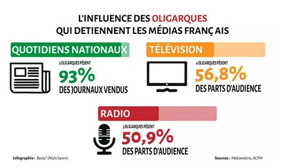
Il convient alors de mieux comprendre la structure des médias en France pour réaliser toute l’imbrication des acteurs politiques et médiatiques. En France, 10 sociétés contrôlent 90% de la presse écrite, 55% des parts d’audience de la télévision et 40% des parts d’audience de la radio.
On retrouve alors les caractéristiques observées par Edward Herman et Noam Chomsky dans Manufacturing consent,[3] une étude sur les médias américains. Ils y décrivent entre autres la dépendance croissante des journalistes envers les sources gouvernementales (communiqués de presse, dépêches etc) qui font que les médias n’ont plus pour matière première des investigations qui sont longues et coûteuses mais des données produites par l’Etat, sur un sujet choisi par l’Etat. Ainsi en France, pour tenir un modèle d’information qui se veut de plus en plus instantané, les grands médias ont recours à des sociétés qui leur facilitent le travail en rendant disponibles des vidéos / explications sur l’actualité. Ainsi, l’Agence France Presse (AFP) mise sur son large réseau de correspondants pour vendre aux médias divers contenus en continu. Cependant, l’Etat est le principal financeur de l’AFP, à hauteur de 40% ce qui peut nous interroger quant à la concentration des moyens d’informations.
Ainsi, si les médias dominants dépendent de l’Etat pour la production d’informations, leur modèle économique fabrique aussi des mécanismes de dépendance. La presse écrite, en perte de vitesse depuis des années, est particulièrement dépendante des subventions de l’Etat : par exemple en 2017, Libération, Le Figaro et Le Monde (des titres majeurs) recevaient du ministère de la culture entre 5 et 6 millions d’euros. Cependant, d’autres acteurs trouvent intérêt à financer la presse : les GAFAM dont nous avons parlé précédemment. La situation est telle que les acteurs de l’information (triptyque médias / Etat / GAFAM) sont indissociables. Avec d’abord Google qui crée dès 2013 un « fonds d’aide au développement de la presse écrite » en France. En 2019, 21 médias français ont ainsi reçu des subventions à hauteur de 6,4 millions d’euros.
Se pose alors la question du fact-checking, une nouvelle pratique journalistique financée en partie par les GAFAM qui promeuvent sur leurs réseaux les comptes des médias traditionnels en leur donnant ce rôle de vérificateur de la véracité des informations. Un rôle doublement intéressant car il est à l’opposé du journalisme d’investigation, aucun besoin d’un travail de terrain, et qu’il crée une légitimité nouvelle à ces médias qui est d’ailleurs fictive puisqu’eux-mêmes peuvent commettre des erreurs et ils ne sont plus, avec tout ce qu’on a décrit, des producteurs primaires de l’information. C’est pour ce rôle de fact-checking que Facebook a un partenariat de puis 2017 avec 8 principaux médias français, qui en échange de subventions permet à la plateforme de redorer son image en jouant sur la notoriété de ces grands titres.
La fabrique du consentement
Le consentement, ça se fabrique. Ou du moins, c'est la thèse de Noam Chomsky et Edward Herman dans leur livre : Manufacturing consent.[3] D'après eux, quatre filtres existent dans les médias et sont à l'origine du contrôle de l'opinion. Il s'agit :
- “Media Ownership” soit la concentration des médias aux mains de riches propriétaires qui cherchent avant tout le profit.
- “Advertising money”, soit la source principale de revenus des médias réside dans la publicité, ils vendent donc notre attention au secteur publicitaire.
- “Media Elite”, l’Etat, les grosses entreprises concentrent le secteur médiatique et sont en mesure de produire des “experts” à la source de l’information diffusée dans tout le secteur qui deviennent des influenceurs, leaders d’opinions.
- “Flack machine”, un moyen de “discipliner” les médias par la marginalisation de certaines personnes avec possibilité de les exclure complètement. Par exemple, le 11 juin 2024, l'humoriste Guillaume Meurice a été licencié « pour faute grave » par Radio France, pour une blague sur le Premier ministre israélien Benyamin Netanyahou. Il dérogeait à la ligne éditorialiste étatique de soutien d’Israël et à ainsi été marginalisé et licencié.
- “Common Enemy”, soit le communisme pour les Etats-Unis durant la guerre froide, la gauche et l’immigration aujourd’hui pour la sphère médiatique, qui rappelons le, est détenue quasiment intégralement par une élite composée de l’Etat et de grandes entreprises. Il s’agit dès lors d’une censure sociale et économique, organisée par cette élite qui désire conserver les rênes de l’opinion publique, fortement dépendante de ce qu’elle détient comme information.
Le cas du Covid est intéressant. En effet, on observe des médias qui habituellement organisent la confrontation des opinions et portent les questions des Français, cette fois, discriminer une partie de la population. Durant cette période, toute contradiction est disqualifiée, on la taxe de non scientifique ou irrecevable moralement. L’ennemi commun devient toutes les personnes qui ne suivent pas les règles, multiples à cette période (port du masque, vaccination par exemple). La doxa prend alors la dimension de ce que Bourdieu appelait une sociodicée : « Max Weber disait que les dominants ont toujours besoin d’une ‘théodicée de leur privilège’, ou, mieux, d’une sociodicée, c’est-à-dire d’une justification théorique du fait qu’ils sont privilégiés ». En l’occurrence, il s’agit de faire accepter « une philosophie de la compétence selon laquelle ce sont les plus compétents qui gouvernent ».[4]
Quand le pouvoir exploite la machine médiatique
La sphère politico-médiatique est bien consciente d’avoir ce pouvoir. Si bien que les politiques comme les journalistes ont mis en place des stratégies pour occuper l’espace médiatique et forger un consentement des citoyens à leurs opinions. En juillet 2025, la vidéo d’une réunion entre Thomas Legrand et Patrick Cohen tous deux journalistes ainsi que deux responsables du parti socialiste[5] fuite et montre ce qui semble être un accord entre politiques et journalistes pour miner la candidature de Rachida Dati à la mairie de Paris dans les médias.
S’il s’agit ici d’une rencontre directe, d’un accord entre journalistes et politiques, d’autres méthodes inspirées notamment d’Edward Bernays peuvent être mises en œuvre. Nous revenons ici à la phrase d’introduction de Marlène Schiappa qui traduit bien les méthodes de communication du parti d’Emmanuel Macron : il s’agit d’orienter les questions des journalistes en leur refusant l’accès à certaines informations et en d détournant leur attention sur de pseudo-événements. Ainsi, lorsqu’en 2023 les mobilisations contre la réforme des retraites prennent de l’ampleur : Marlène Schiappa pose dans Playboy, Olivier Dussopt annonce être homosexuel et Emmanuel Macron donne une interview dans Pif gadget. Autant de subterfuges pour détourner l’attention des médias des revendications. Ce pouvoir est d’autant plus grand que le système médiatique français est centralisé et donc l’engagement potentiel dans une mobilisation des français est déterminé par la perception qu’ils en ont au travers de ces quelques médias. Ainsi, lorsqu’à propos du 10 septembre 2025 les bandeaux mettent en cause la réussite de la mobilisation et que CNews boucle sur les images d’une poubelle en feu[6], leur ligne est claire : tout est mis en oeuvre pour dissuader les français de prendre part aux mouvements.
Plusieurs méthodes peuvent être employées pour créer ces pseudo-événements et cela est d’autant plus facile que l’on est haut dans la hiérarchie du pouvoir : une simple déclaration du Président de la République de par son rôle peut suffir à alimenter les médias. Le rebranding est peut-être la méthode la plus utilisée par Emmanuel Macron : les changements récurrents du nom de son parti politique mais aussi des titres ministériels et institutions publiques sont autant de changements superficiels qui vont monopoliser l’attention des médias sans interroger le fond des réformes. Enfin, le front group[7], méthode favorite d’Edward Bernays, consiste à créer un groupe « d’experts » spécifiquement afin de produire de la connaissance favorable au client. Si le recours à des “experts” est surtout visible sur la scène médiatique, les expériences de démocratie directe d’Emmanuel Macron peuvent être comprises comme des organisations de façade. Que ce soient le Grand débat national en 2019, la Convention citoyenne pour le climat en 2020 ou encore le Conseil National de la Refondation en 2022,[8] aucune de ces structures n’a abouti à des résultats concrets. Le Président de la République les a présentées comme révolutionnaires (et peut-être qu’elles l’auraient été si elles avaient fonctionné) focalisant là aussi les médias sur ces innovations sans qu’elles n’aient donné lieu à une prise en compte des mesures proposées par les citoyens qui y ont participé.
Ainsi, le processus informationnel en France peut sembler extrêmement précaire dans le sens où il est soumis, de la prise d’information à son traitement puis sa diffusion, à l’intervention du pouvoir. D’autant plus lorsque le Président de la République est proche de certaines des plus grandes fortunes de France (Bernart Arnault, Xavier Niel entre autres) qui sont également les grands patrons des médias. Un exemple marquant est peut-être celui de Vincent Bolloré et son acquisition de Relay, les kiosques à journaux en gare ferroviaire qui depuis ce rachat mettent en avant des titres marqués à droite comme nous pouvons le voir sur la photographie ci dessous, soit en cohérence avec les opinions politiques de leur patron. Sur cette photographie prise au Relay de la gare de Reims on observe un grand nombre de journaux marqués à droite qui noient les quelques titres de gauche (Nouvel Obs, Le Monde) qui sont disposés en hauteur.
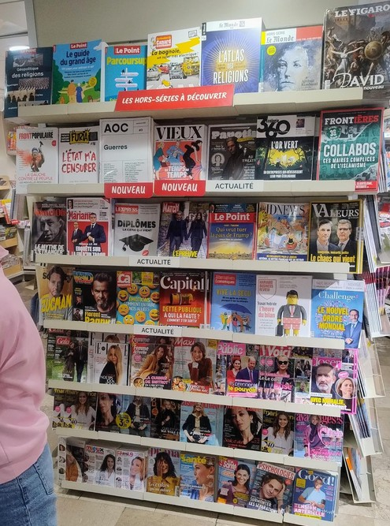
Zoom sur l’empire Bolloré
Il n’est de secret pour personne que la plupart des médias sont détenus, au moins en partie, par des milliardaires. Pourquoi ? Depuis l’arrivée d’internet, les médias traditionnels ont vu leur système économique s’effondrer. Déficitaires, ils ont été rachetés par des milliardaires venus de secteurs différents. La question se pose dès lors, pourquoi investir dans un média déficitaire ? Bien que des plans d’austérités aient eu lieu, on remarque le plus souvent une volonté d’influence de la part de ses milliardaires qui n’hésitent pas à ingérer dans les contenus produits, d’abord pour changer leur format, on passe d’enquêtes fournies à des commentaires courts et relevant de l’opinion plutôt que de la recherche d’information, et ensuite pour définir une ligne éditoriale plus proches de leurs intérêts et opinions. Ainsi, au printemps 2024, Rodolphe Saadé (patron de CMA-CGM) met à pied le directeur de rédaction du journal La Provence, pour une couverture jugée trop « anti-Macron ».[9] Ce n’est qu’un exemple parmi bien d’autres.
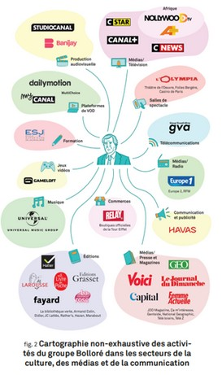
La concentration des médias s’accélèrent aujourd’hui et l’un des principaux acteurs de cette course à l’acquisition est Vincent Bolloré. Ce dernier, à travers les groupes Vivendi et Lagardère, détient une grosse part du secteur de la communication, tant au niveau de la presse écrite que de l’édition ou encore de la radio et de la télévision. L’infographie suivante en donne la mesure. Elle provient du rapport sur « le système Bolloré, de la prédation financière à la croisade médiatique » réalisé par Attac et ODM (observatoire des multinationales). Ce rapport résume ainsi bien la situation avec cette phrase : « les chaînes Vivendi pourront faire la promotion des livres Vivendi avec le soutien des agences de comm’ Vivendi, leurs auteurs pourront avoir accès aux salles Vivendi et leurs ouvrages pourront être mis en avant dans les points de vente Vivendi ». L’influence du groupe de Bolloré dans les différents secteurs de la communication permet de mettre en avant certains ouvrages, le livre de Jordan Bardella en est un bon exemple, tandis que d’autres seront bien plus invisibilisés.
Les groupes rachetés par Vivendi font ainsi l’objet de départ de journalistes qui refusent l’imposition d’une ligne éditoriale d’extrême droite. Ainsi, lors de la nomination de Geoffroy Lejeune (rédacteur en chef d’Éric Zemmour) à la tête du Journal du Dimanche, à l’été 2023, une grève des journalistes commence et elle est suivie de départs de ces derniers. Ces changements de ligne éditoriale imposés par le groupe Bolloré sont visibles assez facilement. Les sujets abordés se restreignent ou certains sujets et contenus sont interdits. Les personnes opposées à leurs idées qui sont invitées pour respecter la pluralité des opinions, inscrite dans le droit français,[10] sont tournées en ridicule, on le voit très clairement sur Cnews. La chaîne est d’ailleurs régulièrement condamnée pour non-respect du principe de pluralité. Les médias du groupe Bolloré, cependant, arrivent à contourner ces règles. Et cela en invitant des « personnalités aux idées politiques affirmées mais non affiliées à un parti politique afin de privilégier certains courants de pensée et d’opinion»[11] (qui ne rentrent donc pas dans le calcul de la pluralité des opinions décompté par l’Arcom). Ainsi, une étude sur l’évolution de la ligne éditoriale de l’ensemble des chaînes de l’audiovisuel français, public comme privé, entre 2002 et 2022 menée conjointement avec M. Moritz Hengel, Mme Camille Urvoy et M. Nicolas Hervé, a montré, en analysant tous les invités, qu’il s’agisse de personnalités politiques au sens alors retenu par l’Arcom ou de personnalités échappant à cette définition mais tenant un discours politique marqué, que sur CNews, il y a eu une augmentation du temps de parole des invités d’extrême droite de l’ordre de 20 % entre 2015 – date du rachat du groupe Canal+ par M. Vincent Bolloré – et 2022. À cette stratégie, se combine celle de reléguer à certains horaires peu exposés, certains courants de pensée et d’opinions. Dans les faits, le pluralisme n’est pas respecté car peu de personnes entendent ces autres opinions.
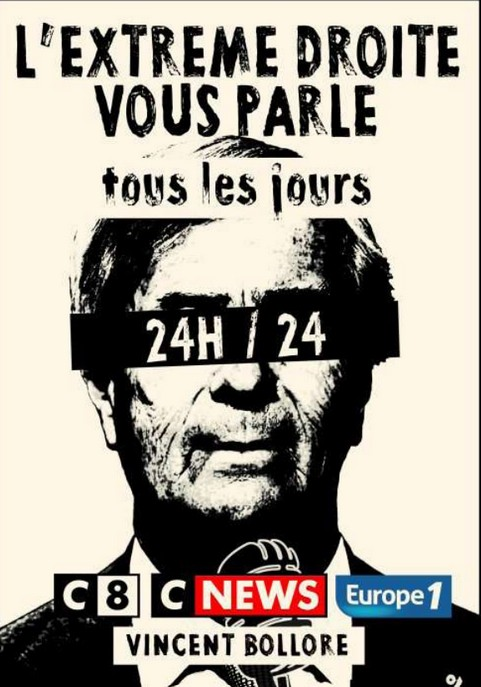
Ainsi, en combinant toutes ces données, on ne peut que conclure qu’une forme de censure est à l’œuvre, par la mise de l’avant d’une seule voix, d’un seul courant de pensée et l’invisibilisation des oppositions. Il est dès lors difficile pour les auditeurs, lecteurs de se faire leur propre opinion, mesurée et critique.
Notes de bas de page
[1] Laurent Martin, « Censure répressive et censure structurale : comment penser la censure dans le processus de communication ? », Questions de communication [En ligne], 15 | 2009, mis en ligne le 01 août 2011 ↑
[2] Baromètre La Croix – Verian – La Poste sur la confiance des Français dans les médias, 38ème édition, janvier 2025↑
[3] https://www.youtube.com/watch?v=34LGPIXvU5M Voir cette vidéo publiée par Al-Jazeera qui reprend les 5 points de la fabrique du consentement & Chomsky, Noam, and Edward S. Herman. 1995. Manufacturing Consent. London, England: Vintage ↑
[4] Laurent Mucchielli. La doxa du Covid : Réflexions sur le contrôle de l’information relative à la crise sanitaire. Les Cahiers du CEDIMES, 2021, 16 (Hors-Série), pp.138-146. ↑
[5] YouTube. https://www.youtube.com/watch?v=swz0u44iMpc. Consulté le 1 novembre 2025. ↑
[6] David Colon. Edward Bernays et la fabrique du consentement. Cahiers de psychologie politique, 2021, 38. ↑
[7] Arrêt sur images, https://www.arretsurimages.net/chroniques/sur-le-gril/10-septembre-sur-cnews-haine-desinformation-et-carton-daudience ↑
[8] https://www.franceinfo.fr/politique/emmanuel-macron/ou-en-est-le-conseil-national-de-la-refondation-un-an-apres-sa-creation-par-emmanuel-macron_6050588.html ↑
[9] Janin, M. L’influence démesurée des grandes fortunes sur les médias. Basta ! (consulté le 28/10/2025). https://basta.media/L-influence-demesuree-des-grandes-fortunes-sur-les-medias ↑
[10] Rigouste, Mathieu. 2012. La Domination Policière. Loi du 30 septembre 1986 sur la liberté de communication, les chaînes de télévision doivent "assurer l’honnêteté, le pluralisme et l’indépendance de l’information". . ↑
[11] Aussitôt décrétée par l’Etat, l’interdiction de TikTok contournée en Nouvelle-Calédonie | La Première. ↑
III — En temps de crise une censure débridée

Le blocage de TikTok en Kanaky (15 au 29 mai 2024) [1]
Le 13 mai 2024 commence l’étude du projet de loi constitutionnelle sur le dégel du corps électoral des élections provinciales de Kanaky. Débutent alors des révoltes contre l'État “colonial”, demandant l’indépendance de l’île. Le 15 mai, les services de l’État demandent à l’opérateur téléphonique présent en Kanaky de bloquer les serveurs liés au nom de domaine de TikTok afin de bloquer le réseau social sur l’île. En clair, lorsqu'on essaie d’accéder à TikTok, le serveur DNS (Domain Name Service) du fournisseur d’accès internet (FAI) bloque l’accès. Seul un VPN (Virtual Private Network) permet de contourner le blocage.
Les fondements juridiques de la décision
Tous les experts s’accordent à dire que les fondements juridiques de la décision sont plutôt bancals. Le gouvernement s’appuie sur deux éléments : la théorie des circonstances exceptionnelles.[2] Il s’agit d’une jurisprudence datant de la Première Guerre mondiale qui permet à l'autorité administrative de prendre en urgence les mesures considérées indispensables en raison de circonstances graves, anormales et imprévisibles pour maintenir la continuité de l’État. Néanmoins, les experts critiquent la proportionnalité de la mesure.[3]
Deuxièmement, l’état d’urgence (décrété le 15 mai sur l’île), avec l’article 11 de cette loi : « Le ministre de l'intérieur peut prendre toute mesure pour assurer l'interruption de tout service de communication au public en ligne provoquant à la commission d'actes de terrorisme ou en faisant l'apologie. »[4] Or ici, il est difficile de caractériser des actes de terrorisme, il s’agit uniquement de manifestations violentes. Qui plus est, cet amendement avait été adopté dans le but de lutter contre les sites de propagande islamiste, on est ici bien loin de cette réalité.
Une décision attaquée devant le Conseil d’État
Dès le 17 mai, cette décision est attaquée notamment par l’association La Quadrature du net qui dépose un référé liberté (procédure d’urgence permettant de garantir les libertés fondamentales) devant le Conseil d’État.[5] Dans un premier temps, le tribunal considère que l’urgence n’est pas caractérisée et décide de ne pas se prononcer sur la légalité de la décision du Premier Ministre. Le blocage du réseau social dure donc jusqu’à la fin de l'état d’urgence, soit le 29 mai.[6]
Néanmoins, le 1er avril dernier, le Conseil d’État a examiné sur le fond le blocage de TikTok et a déclaré son illégalité. La victoire pour les associations de défense des droits de l’Homme est cependant en demi-teinte. La décision est jugée illégale non pas sur le fond mais sur la forme : le Premier Ministre aurait dû prévoir une date de fin au blocage. Le Conseil d’État juge qu’un blocage sans date de fin prévue dès le déclenchement de la mesure est une atteinte disproportionnée aux droits fondamentaux.[7]
Le tribunal maintient que bloquer un réseau social peut être légal même si la loi ne le prévoit pas, si des circonstances exceptionnelles sont réunies (le Conseil d’État juge qu’elles l'étaient en Kanaky) et qu’il s’agit du seul moyen technique disponible pour faire cesser le trouble (ce qui était le cas). On peut penser qu’à l’avenir cette décision fera jurisprudence pour permettre d'autres blocages.
Un blocage prélude à d’autres restrictions des libertés ?
Plusieurs auteurs soulignent le caractère expérimental de la mesure. Pour eux, il s’agissait d’une sorte de test avant d’appliquer la mesure à une plus grande échelle. En particulier depuis les émeutes de 2023 suite à l’assassinat du jeune Nahel Merzouk à Nanterre, l’État cherche le moyen de neutraliser les réseaux sociaux, vus comme des vecteurs de révoltes et un moyen d’organisation des contestataires. Si l’État a pris cette décision en Kanaky c’est pour plusieurs raisons :
- La facilité technique : il n’existe qu’un seul opérateur sur l’île, ce qui a grandement facilité le blocage.
- Le désintérêt médiatique et plus globalement des Français hexagonaux pour la Kanaky, rendant cette mesure plus socialement acceptable.
- Les enjeux géopolitiques : la Chine cherche à avoir de l’influence sur la Kanaky pour récupérer le précieux lithium présent sur l’île et utiliserait TikTok à ces fins.
- Le régime juridique particulier de l’île, qui ne répond pas des engagements européens de la France, notamment concernant l’article 10 de la Convention de sauvegarde des droits de l’Homme (CSDH) qui rend quasi impossible le blocage généralisé de sites internet sur le continent.
Plus largement, ce blocage s’inscrit dans la gestion coloniale de l’île, toujours considérée par l’ONU comme un territoire à décoloniser. Comme le rappelle le sociologue Mathieu Rigouste, les territoires d’Outre-Mer et les banlieues sont des « endo-colonies », des colonies de l’intérieur, dans lesquels les méthodes administratives et policières les plus brutales sont employées avant d’être appliquées à l’ensemble du territoire.[9]
Des pratiques de contournement à diffuser
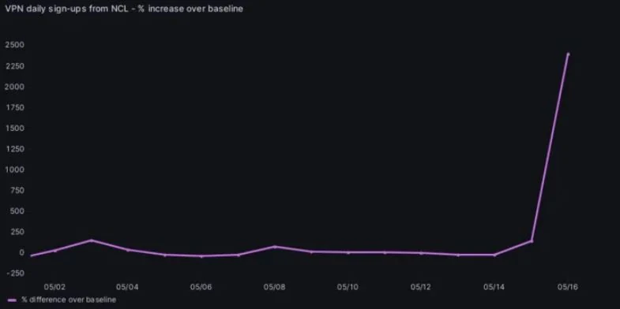
Néanmoins, des solutions existent pour se prémunir face à de telles mesures, comme l’usage d’un VPN. Une jeune de 14 ans explique ainsi à la Première comment elle et tous ses amis ont réussi à continuer à utiliser le réseau social.
En Kanaky, suite à l’interdiction de TikTok, l’usage de VPN a explosé. Proton VPN, tout comme NordVPN, aurait connu une hausse massive d'utilisateurs, avec une augmentation de 2 500 % pour le premier par rapport à début mai, et 500 % pour le second.[10]
Par ailleurs, le blocage de TikTok n’a pas éteint la colère populaire. Les Kanaks ont continué à se retrouver et à protester, utilisant d’autres réseaux sociaux, notamment Facebook (deux fois plus populaire que TikTok), ou se rencontrant physiquement.[11]
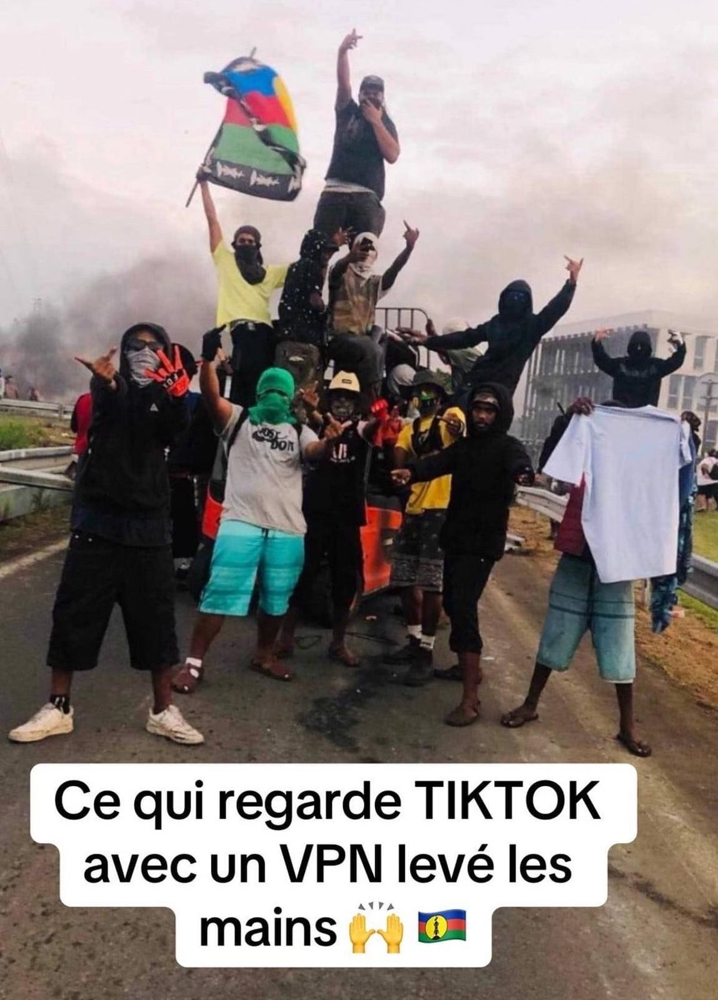
A l'avenir, une censure décomplexée
La décision du Conseil d’État comme concrétisation d’une tendance politique croissante
Jusqu’à cette jurisprudence, aucun acte de droit, aucune décision juridique, ne venait appuyer la légalité d’une décision de bloquer les réseaux sociaux, d’où la controverse autour du cas de la Kanaky.
Elle vient donc confirmer une tendance prise depuis les émeutes de 2023, que nous allons à présent détailler.
Suite aux émeutes qui ont eu lieu du 28 juin au 5 juillet 2023, et ayant comme point de départ la mort de Nahel Merzouk, tué à bout portant lors d’un contrôle de police, le Sénat a publié un rapport, le 9 avril 2024, intitulé « Émeutes de juin 2023 : comprendre, évaluer, réagir ». [12] Dans celui-ci, le Sénat invite à « tirer les leçons » de ces évènements, afin d’apporter une réponse institutionnelle plus adaptée selon lui. C’est ainsi que, parmi les 25 propositions du rapport, il y a la possibilité de « contrôler les réseaux sociaux en cas d’émeutes ». Cela suit une déclaration du président de la République Emmanuel Macron [13], dès le moment des faits, qui évoquait cette idée, tempérée assez rapidement par son porte parole Olivier Véran. Celui-ci a affirmé qu’il ne s’agissait pas de bloquer l’ensemble du réseau concerné (ce qui a pourtant été fait un an plus tard), mais plutôt certaines fonctionnalités, comme la géolocalisation par exemple. C’est cette idée qu’on retrouve dans le rapport, en plus de l’obligation que l’état d’urgence soit déclaré (là encore, on voit bien que ce principe ne fut pas respecté en Kanaky).
Même si ces dispositions n’ont pas été concrétisées par un texte de loi, leur apparition dans le débat parlementaire français marque ainsi une tendance prise, et confirmée par la décision du Conseil d’État du 1er avril dernier. De plus, l’usage concret du blocage de Tik Tok, malgré le fait que rien n’ait prévu législativement cette mesure, pose question quant aux prérogatives dont peut se munir le gouvernement, donnant l’impression que celui-ci peut utiliser les textes de loi comme cela l’arrange à certains moments, même sans validation formelle. Cela laisse penser que la décision du Conseil d’État pourrait mener à des abus de la part du pouvoir en place, notamment du fait de l’aspect assez vague qu’elle revêt. Par exemple, que signifie concrètement le terme « circonstances exceptionnelles » ? De même, les trois conditions à réunir peuvent très bien l’être de manière assez factice.
Les textes de lois récents : une nouvelle marge de manœuvre pour le gouvernement ?
Cette crainte est renforcée par le fait que, même si aucune loi n’autorise encore le blocage des réseaux sociaux en cas de crise, le sujet est néanmoins de plus en plus présent. Les risques de censure peuvent ainsi être décelés, même s’ils sont présents de manière plus insidieuse, dans un autre texte de loi, « visant à sécuriser et réguler l’espace numérique », la loi SREN [14] donc, promulguée le 21 mai 2024.
La Quadrature du Net alerte notamment sur deux dispositions de cette loi [15], qui, du point de vue des libertés, pourraient s’avérer problématiques. La première est la censure obligatoire en 24h, suite à la demande des autorités, de contenu pédopornographique, sous peine de sanctions plus lourdes. Les auteurs soulignent que cela pourrait mener les plateformes, qui ne disposent pas toujours des moyens techniques pour s’assurer de l’illégalité du contenu, à « surcensurer » par précaution. Même si cela peut paraître minime comparé au risque de pédopornographie, la même critique avait été proférée à l’égard de la loi Avia en 2020, menant à son rejet par le Conseil Constitutionnel.[16]
La deuxième réserve émise par l’association est l’apparition d’un contrôle administratif du contenu au niveau des navigateurs web. Cela signifie que la police, si elle repère un site de phishing, est en capacité d’imposer au navigateur web le retrait du contenu. Peu importe que la décision soit justifiée ou non, ce n’est pas dans le pouvoir du navigateur de s’y opposer, d’autant plus que la décision d’un juge intervient seulement a posteriori de la décision de censurer. On voit bien les risques que comprend cette disposition, et le chemin qu’elle ouvre vers une censure du contenu politique.
On remarque ainsi à travers cette loi, même si elle n’est pas directement liée au contrôle des réseaux sociaux dans les moments de crise, une orientation du gouvernement plutôt vers la restriction que vers l’éducation ou encore l’allocation de moyens plus importants à la justice pour sanctionner les abus réels des réseaux, ce que regrette notamment la Quadrature du net. De plus, le fait que des dispositions, qui avaient provoqué le rejet de la loi Avia quatre ans auparavant soit désormais acceptées, pose question quant à l’évolution des représentations politiques sur le sujet.
De nouvelles orientations politiques de plus en plus dangereuses pour les libertés ?
A ce titre, certaines prises de position de députés restent assez inquiétantes. En effet, on peut citer, toujours dans le cadre de la loi SREN, la proposition d’amendement du député Renaissance Paul Midy, entouré d’autres membres de la majorité. Cette proposition consistait à rendre obligatoire de donner son identité numérique lors de la création d’un compte sur un réseau social. Elle fut rejetée [20] lors de discussions hors séance, car cela aurait mis en danger le vote du texte, mais l’idée est tout de même révélatrice de nouveaux risques pour l’anonymat en ligne.
Dans la même mouvance, le projet de règlement de l’union européenne « Chat control », également appelé « Child Sexual Abuse Regulation » (CSAR) interroge. Quoique l’intention paraisse louable, le but affiché étant effectivement de lutter contre la pédocriminalité, les dispositions prévues à cet effet sont particulièrement contestées. Le règlement prévoit de fait de forcer les plateformes à scanner les messages privés en amont de leur chiffrement, y compris pour des réseaux sociaux à haut chiffrement tels que Whatsapp ou Signal. Cela a même donné naissance à une campagne, intitulée « Stop Scanning Me » [17]car, comme le dénoncent de nombreuses organisations et citoyens, le risque est d’autoriser une surveillance de masse de la population, en prétendant la protéger.
En effet, le chiffrement est essentiel pour de nombreuses personnes, que ce soit pour se sentir plus en sécurité, ou bien pour la liberté de l’action militante, comme en témoignent de jeunes activistes sur le site de la campagne. Les spécialistes sont unanimes quant au danger pour le chiffrement dans son ensemble que cette nouvelle obligation représenterait, et donc, par conséquent, pour les libertés individuelles. De plus, cette proposition suppose que toutes les plateformes incluent un moyen de contrôler l’âge de l’internaute à leurs pratiques, ce qui, là encore, est impossible à ce jour sans constituer une atteinte à la « liberté d’expression, à l’indépendance et au droit à la vie privée »[18], comme le fait remarquer la Quadrature du net. De fait, à la fois l’ONU et la Cour européenne des droits de l’Homme ont relevé qu’une violation du chiffrement constituerait un danger massif pour le droit à la vie privée.[19]
Ainsi, présentée en 2022, cette loi devait être votée ce 14 octobre 2025 en Conseil de l’Union Européenne. Cependant, faute de majorité, le texte a été rejeté, et le vote devrait donc se tenir plus tard. Le parlement européen avait déjà adopté en 2023 une position contre ce dispositif, cependant l’expérience a montré que cette instance a moins de poids dans les négociations, et le rapporteur de la loi a laissé entendre qu’il pourrait assouplir sa position sur le chiffrement, ce qui là encore est assez inquiétant. De même, plusieurs pays se sont prononcés officiellement contre, mais sont apparemment soumis à de plus en plus de pression de la part notamment du département des affaires intérieures de la Commission européenne. C’est ainsi que, après avoir voté contre puis s’être abstenue, la France pourrait maintenant voter pour ce projet. Même s’il reste donc une certaine réticence face au vote d’une loi si contestée et dangereuse pour nos libertés individuelles, le débat est loin d’être clos et, au-delà de ça, c’est le projet même qui interroge.
Un débat plus que jamais au goût du jour
Tous ces éléments ne signifient pas qu’il ne faut rien réguler. Les tentatives de diminuer le cyberharcèlement ou encore la diffusion de contenu haineux ou à caractère pédopornographique sont tout à fait justifiées. Cependant, il faut s’interroger sur la limite entre une nécessaire protection de la population vis à vis des dangers des réseaux sociaux, et une censure plus ou moins masquée derrière ces nobles intentions.
Dès 2023, certains médias alertent sur le virage possiblement liberticide que prenait la France, invoquant l’engagement pris en 1966, lors de la signature du Pacte international relatif aux droits civils et politiques [21], à n’exercer une restriction sur la liberté d’expression que dans un cadre fixé par la loi. La restriction doit donc être proportionnée, et nécessaire pour protéger l’« intérêt légitime », qui doit faire partie d’une liste précise édictée à l’article 9. Le blocage des réseaux en Kanaky est la preuve que, lorsque des considérations politiques sont en jeu, ces garde-fous contre l’usage de mesures abusives n’ont plus d’importance.
Nos observations visent ainsi à montrer que le risque encouru est que certaines considérations, juridiques et éthiques, ne soient plus prises en compte actuellement dans les réflexions sur les réseaux sociaux, le numérique, et ses risques. La crainte croissante des réseaux et la place de plus en plus importante qu’ils prennent dans la vie quotidienne semblent justifier des projets de plus en plus liberticides, qui alertent de nombreuses organisations sur les dérives possibles, y compris pour la censure du contenu politique.
Ainsi, si on reprend le cas du blocage des réseaux lors de situations exceptionnelles comme les émeutes, on remarque que les pays qui en font une application régulière sont des pays peu démocratiques comme le Burkina Faso, le Sri Lanka [22], … De plus, ces mesures restent politiques dans le sens où elles contribuent à décrédibiliser les mouvements, en les rendant responsables des violences, sans questionner cependant la légitimité de leurs revendications. De même, certaines études ont prouvé que, loin de faire baisser la violence, la censure des réseaux pouvait mener à un pic de violence au contraire, ce qui irait donc à l’encontre des objectifs affichés par le gouvernement.
Ces différentes remarques nous font donc questionner la gestion démocratique des situations de crise et, plus généralement, des réseaux sociaux et leurs risques. La ligne entre mesure nécessaire à la sécurité et censure masquée est fine, et souvent l’une peut mener à l’autre sans que cela ne se remarque.
Notes de bas de page
[1] Dans un esprit décolonial nous utiliserons le terme Kanaky, terme utilisé par les Kanaks en opposition avec le terme Nouvelle-Calédonie, importé lors de la colonisation française. ↑
[2] Interdiction de TikTok en Nouvelle-Calédonie : une mesure basée sur un "fondement juridique flou" selon des experts | La Première. ↑
[3] Blocage de TikTok en Nouvelle-Calédonie : la décision du Conseil d'État | vie-publique.fr. ↑
[4] Décret n° 2024-436 du 15 mai 2024 portant application de la loi n° 55-385 du 3 avril 1955. ↑
[5] La Quadrature du Net attaque en justice le blocage de TikTok en Nouvelle-Calédonie | la quadrature du Net. ↑
[6] CE n° 494320/2024. ↑
[7] CE n° 494320/2025. ↑
[8] https://www.laquadrature.net/wp-content/uploads/sites/8/2024/05/LQDN_RL_Blocage_TikTok_anon.pdf (référé liberté déposé par la Quadrature du Net le 17/05/2024). ↑
[9] Rigouste, Mathieu. 2012. La Domination Policière. https://doi.org/10.3917/lafab.rigou.2012.01. ↑
[10] Aussitôt décrétée par l’Etat, l’interdiction de TikTok contournée en Nouvelle-Calédonie | La Première. ↑
[11] Blocage de TikTok en Nouvelle-Calédonie : l'usage des VPN explose pour contourner l'interdiction | Cnet. ↑
[12] Sénat, Rapport d’information n° 521 (2023-2024), “Emeutes de juin 2023 : comprendre, évaluer, réagir”, déposé le 9 avril 2024 : https://www.senat.fr/rap/r23-521/r23-5218.html (consulté le 28 octobre 2025). ↑
[13] https://www.ouest-france.fr/faits-divers/emeutes-urbaines/couper-les-reseaux-sociaux-en-cas-demeutes-comment-le-gouvernement-compte-t-il-sy-prendre-f8f6d2a6-1b31-11ee-8c1d-2fa30ad00bee. ↑
[14] L. n°2024-449, 21 mai 2024, visant à sécuriser et à réguler l’espace numérique, NOR : ECOI2309270L : https://www.legifrance.gouv.fr/jorf/id/JORFTEXT000049563368/ (consulté le 29 octobre 2023) . ↑
[15] https://www.laquadrature.net/2023/09/12/projet-de-loi-sren-le-gouvernement-sourd-a-la-realite-dinternet/. ↑
[16] DC ,n°801/2020 : https://www.conseil-constitutionnel.fr/decision/2020/2020801DC.htm . ↑
[17] https://stopscanningme.eu/fr/ . ↑
[18] https://www.laquadrature.net/2025/10/03/chat-control-on-fait-le-point/ . ↑
[19] https://www.radiofrance.fr/franceinfo/podcasts/aujourd-hui-c-est-demain/whatsapp-messenger-la-cour-europeenne-des-droits-de-l-homme-s-oppose-a-l-obligation-de-fournir-les-cles-pour-dechiffrer-les-messages-2812729 . ↑
[20] https://basta.media/Chat-Control-reglement-europeen-attaque-confidentialite-communications-Whatsapp-Signal . ↑
[21] https://www.ohchr.org/fr/instruments-mechanisms/instruments/international-covenant-civil-and-political-rights . ↑
[22] https://theconversation.com/en-france-ou-ailleurs-couper-lacces-aux-reseaux-sociaux-pour-couper-court-aux-emeutes-209583 . ↑